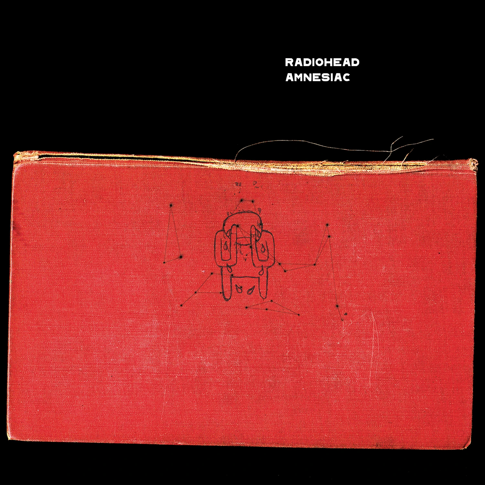

El Último Concierto de Radiohead: Filadelfia, 2018
Revive el que se considera el último concierto de Radiohead hasta la fecha, celebrado el **1 de agosto de 2018** en el Wells Fargo Center de Filadelfia, Estados Unidos. Fue el cierre de su gira "A Moon Shaped Pool" en Norteamérica, una noche memorable que los fans esperan que no sea la última.
Radiohead en el Wells Fargo Center, Filadelfia - 1 de Agosto de 2018
Sobre Radiohead

Radio-Head - Foto del Junio de 1995
Radiohead es una banda británica de rock alternativo formada en Abingdon-on-Thames en 1985. La banda está integrada por Thom Yorke (voz, guitarra, piano, teclados), Jonny Greenwood (guitarra principal, teclados, otros instrumentos), Ed O'Brien (guitarra, coros), Colin Greenwood (bajo) y Philip Selway (batería, percusión).
Conocidos por su evolución sonora y experimentación, han sido aclamados por la crítica y han influenciado a numerosos artistas. "Amnesiac", lanzado en 2001, surgió de las mismas sesiones que su predecesor "Kid A", explorando texturas electrónicas, jazz e influencias de música clásica del siglo XX.
Nuestro Álbum mas escuchado: OK Computer
Haz clic en el ícono de play para escuchar la canción:
- Paranoid Android
- Karma Police
- No Surprises
- Exit Music (For a Film)
- Let Down
- Airbag
- Subterranean Homesick Alien
- The Tourist
- Lucky
- Electioneering
Contenido Destacado
Echa un vistazo a las canciones más escuchadas que hemos hecho:
Pyramid Song
Una pieza melancólica y atmosférica construida sobre un distintivo ritmo de piano.

Knives Out
Reminiscencia del sonido de The Smiths, con guitarras intrincadas y una melodía pegadiza.
I Might Be Wrong
Impulsada por un riff de guitarra bluesero, elementos electrónicos sutiles y hace recordar una epoca de felicidad.

Like Spinning Plates
Una pista experimental con voces reproducidas al revés y texturas electrónicas densas.

Life in a Glasshouse
Cierre del álbum con influencias de jazz de Nueva Orleans, con la Humphrey Lyttelton Band.
Contacto
¿Quieres saber más o dejarnos un comentario?